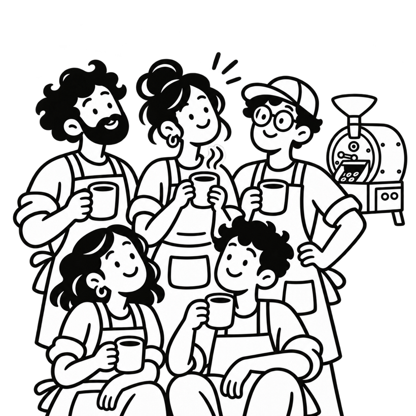

Jesteśmy Kavvusia.
Mała palarnia, która chce, żeby dobra kawa była normalna – nie snobistyczna. Palimy w piątek, wysyłamy w poniedziałek.

W co wierzymy
Świeżość
Palimy małe partie co tydzień. Żadnej kawy sprzed pół roku – data palenia jest na każdej torebce.
Po ludzku
Zamiast „nuty owoców pestkowych z finiszem kakaowym” piszemy: smakuje jak karmel i jabłko.
Uczciwie
Wiemy, skąd jest każde ziarno. Kupujemy od sprawdzonych importerów kaw speciality.

Tydzień w palarni
Piątek – palimy. Każda kawa ma swój profil: jaśniej pod przelew, ciemniej pod kawiarkę i espresso.
Sobota – kawa odpoczywa i „odgazowuje”. W tym czasie ją próbujemy.
Poniedziałek – pakujemy i wysyłamy. Kurierem albo do paczkomatu.
Zespół projektu
Kavvusia to projekt zaliczeniowy z przedmiotu „Zarządzanie Treścią (CMS)” na PJATK. Za sklepem stoją:
B
Bartosz Urbański
W
Wojciech Huzar
P
Piotr Michalak
W
Wiktor Chudy
O